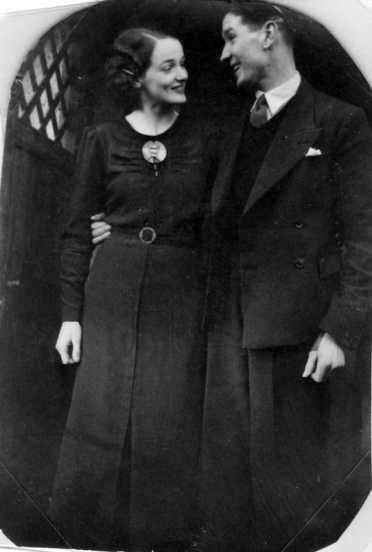

DRYDEN LIDDLE
Born: 1914 in Loanhead, Parish of Lasswade, Midlothian, Scotland
Died: 28 Jan 1981 in Saint Luke's Hospital, G'Mangia, Malta
Occ: marine engineer at McTaggart Scott in Loanhead
Notes
Married: 29th Oct 1937 in Cockpen Church, Midlothian.
JEMIMA (Mamie) ASHCROFT GRANT
Born: 18 Dec 1918 in Edinburgh, Midlothian, Scotland
Died: 27 Oct 2012 in Edinburgh, Midlothian, Scotland
Occ: Domestic Servant
Notes
Children:
Dryden Ashcroft(1940)
Shiona Grant(1959)
[ Liddle Home ]
[ Grant Home ]